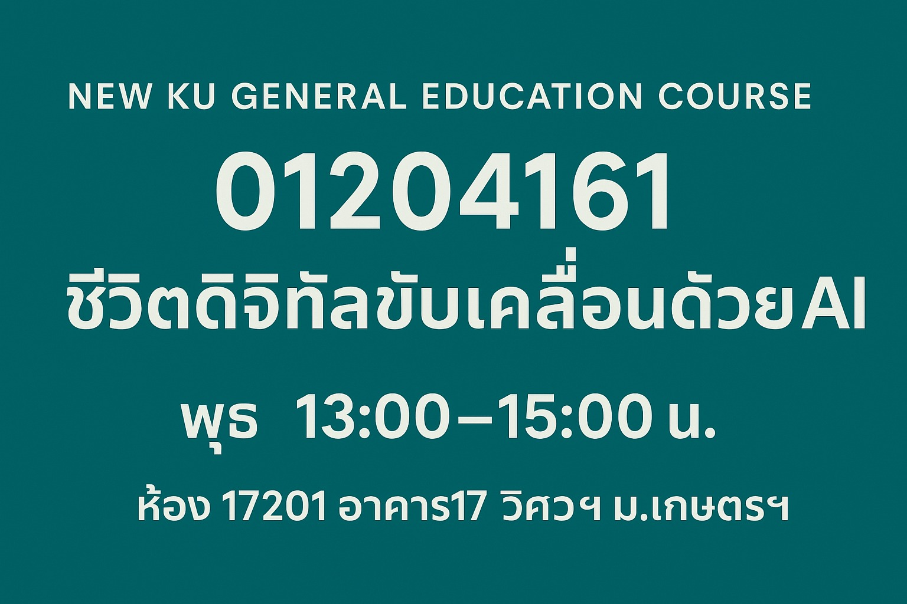

AI for All กลับมาแล้ว และวิชานี้ทำให้ AI กลายเป็นความรู้พื้นฐานที่นิสิตทุกคณะควรเข้าถึงได้จริง
{kind=link}

บทความนี้วางวิชา AI for All หรือ AI-Empowered Digital Life ให้เป็นวิชาศึกษาทั่วไปที่นิสิตทุกคณะทุกชั้นปีควรเข้าถึงได้ เพราะ AI ไม่ได้เป็นเรื่องของนักเทคนิคเท่านั้นอีกต่อไป แต่แทรกอยู่ในชีวิต การเรียน การทำงาน และการตัดสินใจของแทบทุกวิชาชีพ
จุดสำคัญของวิชานี้คือ ไม่ได้สอนเพื่อให้ทุกคนกลายเป็นผู้เชี่ยวชาญเทคนิค แต่เพื่อให้ผู้เรียน เข้าใจจริง ใช้เป็นจริง และรู้เท่าทัน การเปลี่ยนแปลงของโลกเทคโนโลยี ทั้งในแง่ประโยชน์ ข้อจำกัด ความเสี่ยง และผลกระทบทางจริยธรรม
หัวใจของโพสต์นี้คือการยืนยันว่า AI literacy ควรเป็นความรู้พื้นฐานของนิสิตทุกคณะ ไม่ใช่สิ่งที่กระจุกอยู่เฉพาะในกลุ่มคนสายคอมพิวเตอร์หรือวิศวกรรมศาสตร์ วิชานี้จึงทำหน้าที่เป็น สะพานเชื่อมระหว่างโลก AI กับชีวิตจริง ของผู้เรียนทั่วไป
วิชานี้เหมาะกับคนที่ไม่อยากเป็นแค่ผู้ใช้เทคโนโลยี แต่เข้าใจเบื้องหลังมันด้วย
สิ่งที่น่าสนใจมากคือผู้เขียนนิยามกลุ่มเป้าหมายของวิชาไว้อย่างชัดเจน: ไม่ใช่แค่คนที่อยากใช้ AI ให้เป็นประโยชน์ แต่รวมถึงคนที่ไม่อยากเป็นเพียง “ผู้ใช้เทคโนโลยี” โดยไม่เข้าใจเบื้องหลังมันด้วย
นั่นทำให้ AI for All ไม่ได้หยุดที่การสอนเครื่องมือยอดนิยมอย่าง ChatGPT, Gemini หรือ Copilot แต่พยายามทำให้ผู้เรียนมีกรอบคิดที่จะมองเทคโนโลยีอย่างมีวิจารณญาณมากขึ้น
จาก prompt writing ถึง ethics วิชานี้ทำให้การใช้ AI เป็นทั้งทักษะและการตัดสินใจ
โครงสร้างรายวิชาที่โพสต์สรุปไว้แสดงให้เห็นว่าวิชานี้ครอบคลุมทั้งพื้นฐาน AI และ machine learning การใช้เครื่องมือจริง การฝึกเขียน prompt อย่างมีประสิทธิภาพ ไปจนถึง deepfakes, privacy, security และ ethics
นี่เป็นจุดแข็งมาก เพราะทำให้การเรียน AI ไม่จบแค่การ “ใช้ให้คล่อง” แต่พาไปถึงการคิดว่า ควรใช้เมื่อไร ใช้อย่างไร และอะไรคือความเสี่ยงที่ต้องระวัง
วิชาศึกษาทั่วไปที่ดีต้องพาผู้เรียนเชื่อม AI เข้ากับงานของตัวเองได้
ผู้เขียนไม่ได้มอง AI for All เป็นเพียงวิชาทั่วไปที่ให้ภาพกว้าง แต่ตั้งใจให้ผู้เรียนสามารถสร้างไอเดียประยุกต์ AI ในสายงานของตัวเองได้จริง นั่นทำให้วิชานี้ไม่ใช่เพียงการรับรู้ข่าวสารเทคโนโลยี แต่เป็นการเริ่มต้นสร้าง agency ให้กับนิสิตในโลกดิจิทัล
เมื่อออกแบบเช่นนี้ AI for All จึงเป็นวิชาศึกษาทั่วไปที่เชื่อมระหว่างความรู้ ความเข้าใจ และการประยุกต์ใช้ในชีวิตจริงได้ครบกว่าวิชาทั่วไปที่เพียงให้ผู้เรียน “รู้ว่าอะไรเกิดขึ้น”
ในภาพใหญ่ AI for All คือการขยายความพร้อมของมหาวิทยาลัยทั้งระบบ
เมื่อวิชานี้เปิดให้ทุกคณะ ทุกชั้นปี และนับเป็น GE ได้จริง ความหมายของมันจึงไปไกลกว่าตัวรายวิชา เพราะมันกำลังช่วยสร้างฐานร่วมให้มหาวิทยาลัยทั้งระบบมี AI readiness มากขึ้น
ในมุมนี้ AI for All จึงเป็นส่วนหนึ่งของการเตรียมมหาวิทยาลัยให้พร้อมกับโลกที่ AI จะเป็นโครงสร้างพื้นฐานของการเรียน การทำงาน และการใช้ชีวิต ไม่ใช่เพียงกระแสเทคโนโลยีชั่วคราว